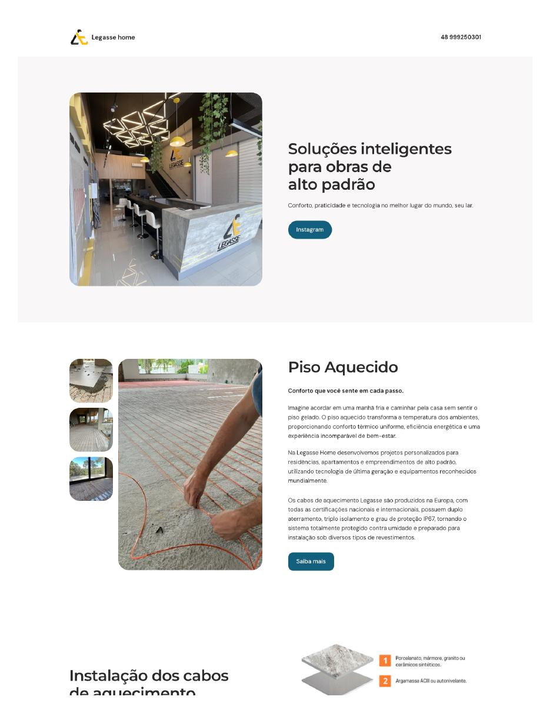
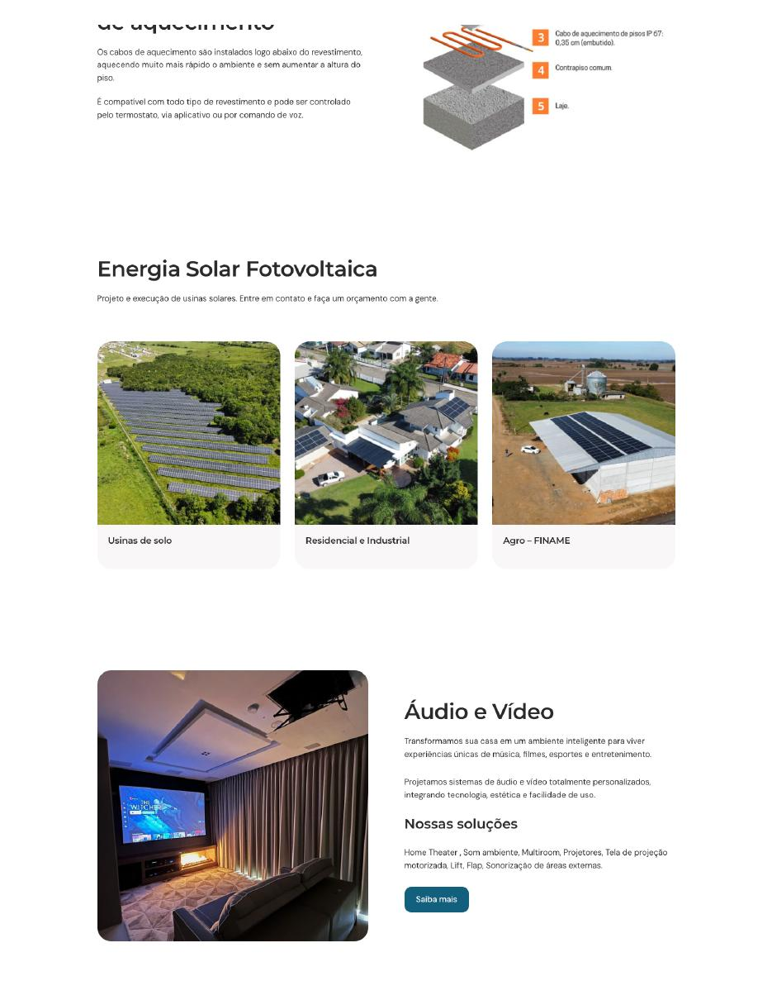

Rápido, moderno e pronto para ser encontrado — no Google e nas inteligências artificiais.
O site é onde ele confirma se a empresa é sólida e confiável. Hoje o site atual perde pontos em duas frentes:
Velocidade de carregamento e a capacidade de ser encontrado pelo Google e pelas IAs.
Visual, textos e experiência de quem navega — a primeira impressão da DFT.
nota de desempenho no celular (Google PageSpeed) · 54 no computador
até o conteúdo principal aparecer no celular — o Google considera bom até 2,5s
peso total da home — o ideal é abaixo de 1,5 MB (só 2 banners = 3,9 MB)
só para o servidor começar a responder
Carregamento de 1s → 3s: chance de abandono
+32%
Carregamento de 1s → 5s: chance de abandono
+90%
Fonte: Google / SOASTA Research, "Think with Google", 2017. Medições do site atual: Google PageSpeed Insights e Cardô, 25/11/2026.
O comprador já pergunta ao ChatGPT, Gemini e Perplexity "qual transportadora dedicada em SP para indústria?". As IAs recomendam empresas cujos sites são claros, estruturados e com dados concretos.
O objetivo
A DFT tem frota própria, telemetria, câmeras com IA e clientes como Levi's e Ceva. O site não transmite isso.



Entregue pela Cardô em novembro/2026 · servidor responde em 0,22s (3x mais rápido que o site atual da DFT) · rastreamento completo de conversões (GTM, GA4, Google Ads).
Home · Sobre/História · Estrutura e Frota · Transporte · Armazenagem · Tecnologia · Segmentos · Malha Logística · Comercial/Contato · Trabalhe Aqui · Políticas · Blog
Fotos: acervo atual da DFT. Até 2 rodadas de revisão por etapa (texto e design).
Imersão, arquitetura do site e estratégia de conteúdo
Textos e aprovação
Design e aprovação
Desenvolvimento, integrações e rastreamento
Testes, ajustes finais e publicação
Validação da proposta
Contrato e 1ª parcela
Reunião de kick-off e início do projeto